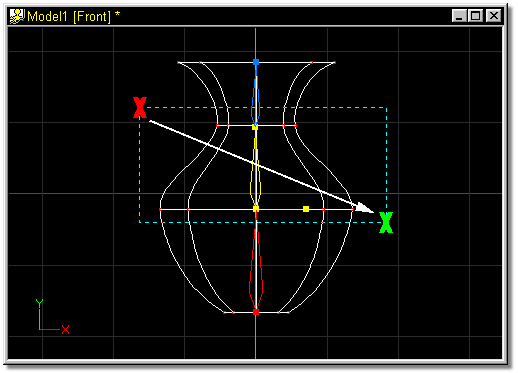
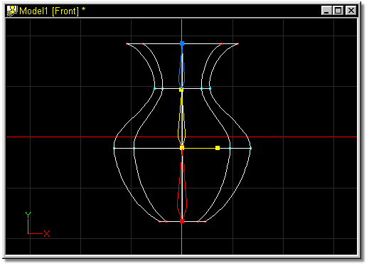

After adding bones to model, it is necessary to tell the software which control points on the wireframe are associated with any given bone.
Click the bone you wish to group points for, or select it in the Project Workspace by clicking on it. Find a viewing angle and zoom which best isolates the control points you are interested in, then click the Group button. Point in the appropriate window near the corner of the targeted control points and press and hold the mouse button. As you move, a bounding rectangle will drag behind the mouse. Once the bounding box contains all of the targeted control points, release the mouse button. The bounding rectangle will disappear and all of the bounded control points will turn the color of the bone that they are associated with.
After clicking the Group button, dragging a bounding box around control points with the right mouse button will add the bound points to the current group.
The default keyboard shortcut key for Group Mode is G.

To associate a group of control points with a bone, select the bone by clicking on it in either the Bone window, or in the Project Workspace (the handles will turn yellow). In Figure 1, the center bone was selected.

Figure 1
Click the Group button on the Tool Panel, then point in the bone window near the corner of the targeted control points (the Red X). Press and hold the mouse button while dragging the mouse in the direction of the white arrow. Once the bounding box contains all of the targeted control points (the Green X), release the mouse button. Notice that the bounding box is the color of the currently selected bone.

Figure 2
The resulting group of points will turn the color of the bone with which they are associated:

Figure 3
When associating control points with bones, remember that it is not necessary to select any group for the default bone.
It may also be easier for you to completely add all of the bones to a model before attempting to group any of the points that are associated with any given bone.
Related Topics:
Add
Delete
Attach
Detach
Lasso